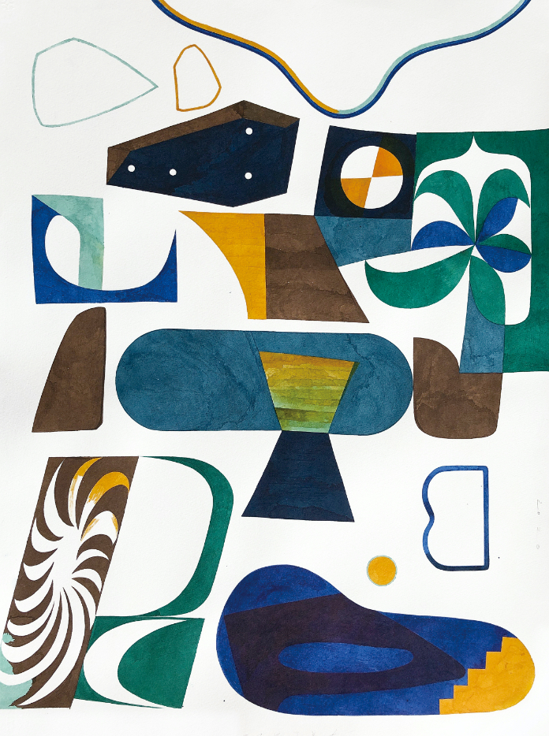

About

Make good things
T.READ(ツリード)は、福岡を拠点に活動する編集者・後藤麻与を中心に、様々なつくり手が集まり、毎日をより楽しくするヒントを発信していくコミュニティです。
このサイトを訪れることで、普段つながることのない人同士が出会い、福岡での暮らしに新たな価値観や視点が生まれるきっかけになればうれしいです。
- T.READサイトに関するお問い合わせ (info[at]t-read.jp)
- T.READサイトに関するお問い合わせ (info[at]t-read.jp)
- T.READサイトに関するお問い合わせ
- T.READサイトに関するお問い合わせ
Policy
以下の内容は、後藤麻与が運営するこのウェブサイト（以下「本サイト」といいます）をご利用いただく際の利用条件等を定めたものです。本サイトを利用された場合は、以下の内容について同意したものとみなされます。
著作権について
本サービスの一部又は全部を転載、複製、改変、又は転送その他一切の二次利用をすることを禁止します。
免責条項
本サイト内の情報・サービスの正確性・完全性・信頼性、またこれらの使用によって生じた結果に関しても、一切の責任を負わないものとします。